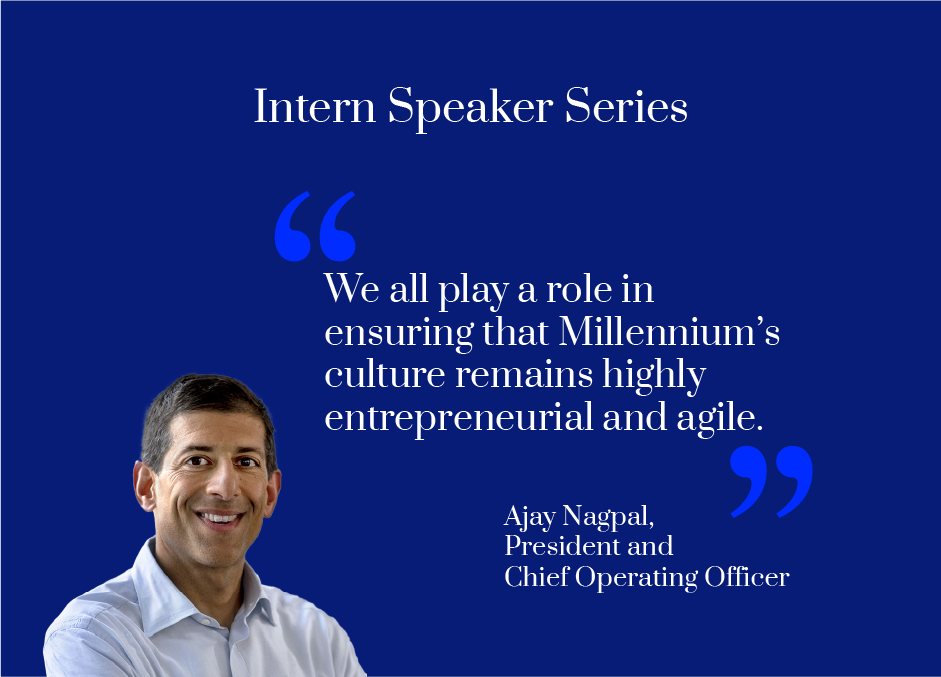
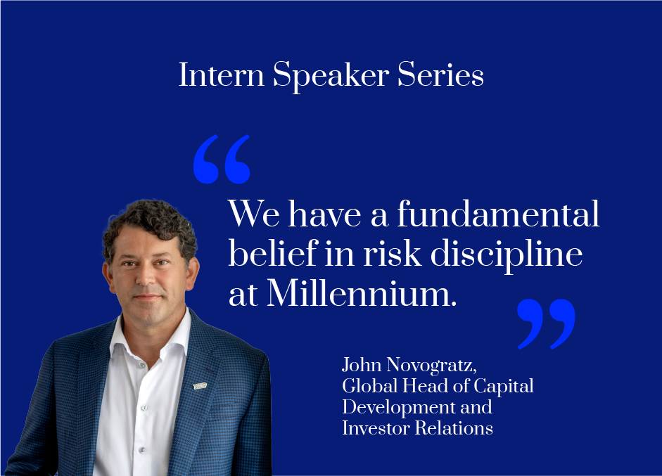
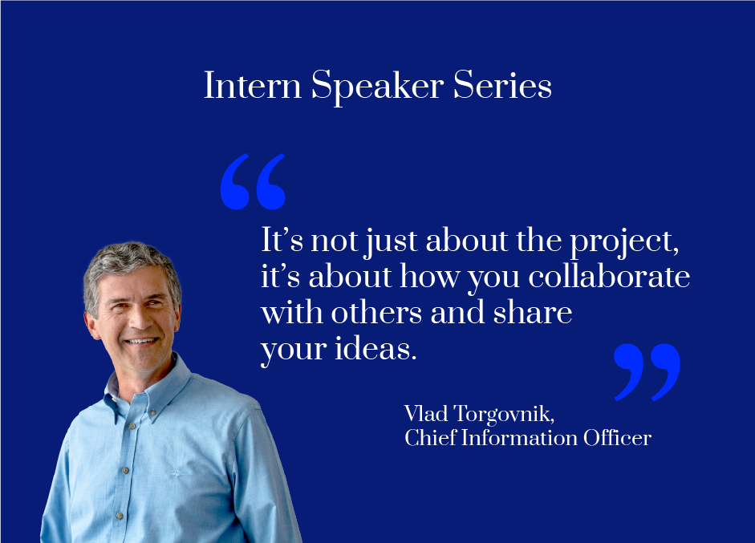
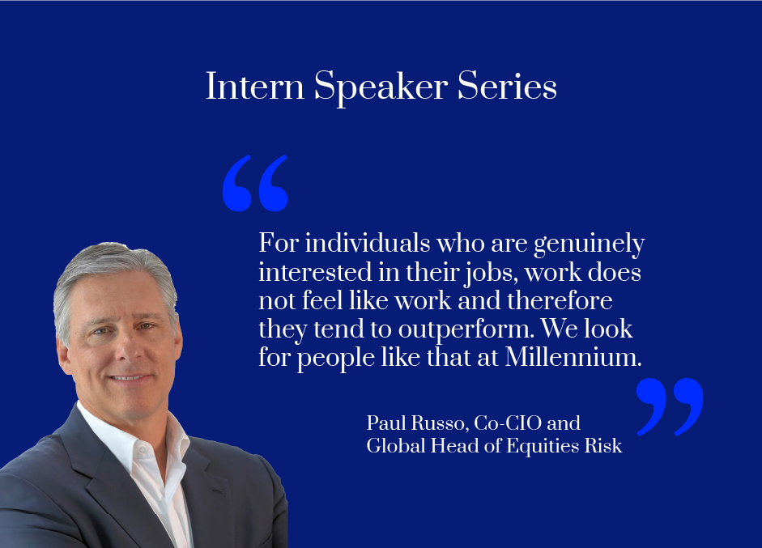
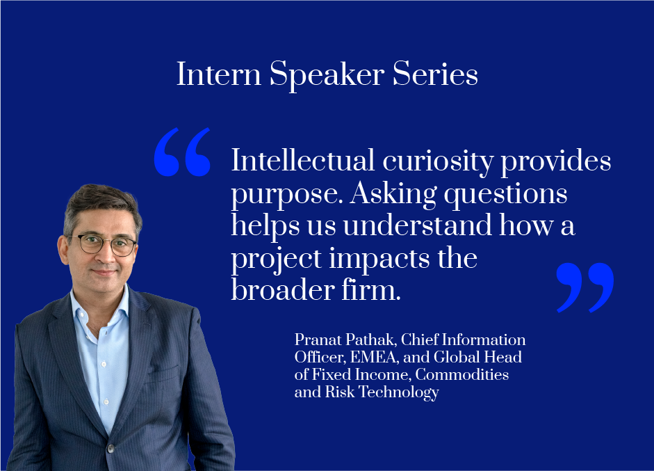
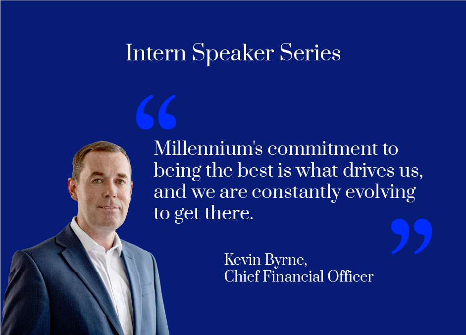
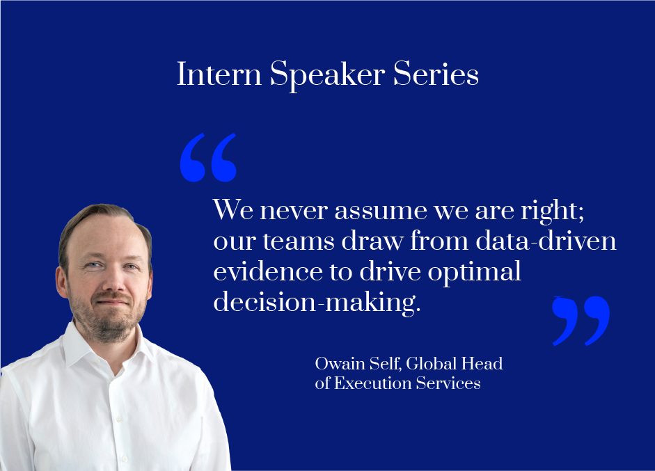
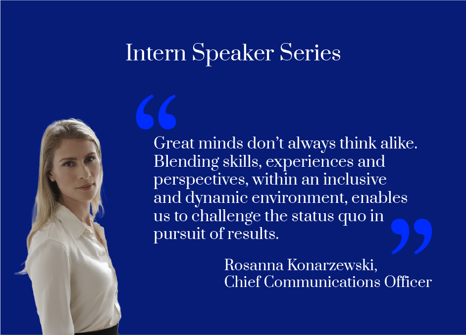

<?xml version="1.0" encoding="UTF-8"?><rss version="2.0"
	xmlns:content="http://purl.org/rss/1.0/modules/content/"
	xmlns:wfw="http://wellformedweb.org/CommentAPI/"
	xmlns:dc="http://purl.org/dc/elements/1.1/"
	xmlns:atom="http://www.w3.org/2005/Atom"
	xmlns:sy="http://purl.org/rss/1.0/modules/syndication/"
	xmlns:slash="http://purl.org/rss/1.0/modules/slash/"
	>

<channel>
	<title>Millennium Management | Events</title>
	<atom:link href="https://mln.finance/article-tag/events/feed/feed.html" rel="self" type="application/rss+xml" />
	<link>https://mln.finance/article-tag/events/</link>
	<description></description>
	<lastBuildDate>Wed, 05 Jun 2024 15:36:52 +0000</lastBuildDate>
	<language>en-US</language>
	<sy:updatePeriod>
	hourly	</sy:updatePeriod>
	<sy:updateFrequency>
	1	</sy:updateFrequency>
	<generator>https://wordpress.org/?v=6.7.1</generator>

<image>
	<url>https://mln.finance/wp-content/uploads/2024/05/cropped-favicon-32x32.png</url>
	<title>Millennium Management | Events</title>
	<link>https://mln.finance/article-tag/events/</link>
	<width>32</width>
	<height>32</height>
</image> 
	<item>
		<title>Millennium Team Sponsors IIT Madras Flagship Finance Event</title>
		<link>https://mln.finance/life-at-millennium/millennium-team-sponsors-iit-madras-flagship-finance-event/</link>
		
		<dc:creator><![CDATA[hyoon]]></dc:creator>
		<pubDate>Wed, 13 Mar 2024 19:37:00 +0000</pubDate>
				<guid isPermaLink="false">https://mln.finance/?post_type=mlp_articles&#038;p=1229</guid>

					<description><![CDATA[<p>Millennium was recently the title sponsor for the Indian Institute of Technology Madras (IIT Madras) Finance Club’s annual flagship learning event, 36’ Wall Street. Over 200 undergraduate students from across the university attended. The event featured a Millennium fireside chat with an IIT Madras alumni panel, where colleagues at the firm shared their respective career [&#8230;]</p>
<p>The post <a href="../../../life-at-millennium/millennium-team-sponsors-iit-madras-flagship-finance-event/millennium-team-sponsors-iit-madras-flagship-finance-event.html">Millennium Team Sponsors IIT Madras Flagship Finance Event</a> appeared first on <a href="../../../index.html">MLP</a>.</p>
]]></description>
										<content:encoded><![CDATA[
<p>Millennium was recently the title sponsor for the Indian Institute of Technology Madras (IIT Madras) Finance Club’s annual flagship learning event, 36’ Wall Street. Over 200 undergraduate students from across the university attended.</p>


<p>The event featured a Millennium fireside chat with an IIT Madras alumni panel, where colleagues at the firm shared their respective career journeys and paths to Millennium. It also featured a Quant challenge workshop hosted by Millennium, which had over 40+ university student participants.</p>
<p>The post <a href="../../../life-at-millennium/millennium-team-sponsors-iit-madras-flagship-finance-event/millennium-team-sponsors-iit-madras-flagship-finance-event.html">Millennium Team Sponsors IIT Madras Flagship Finance Event</a> appeared first on <a href="../../../index.html">MLP</a>.</p>
]]></content:encoded>
					
		
		
			</item>
		<item>
		<title>Millennium Paris Hosts French Student Events</title>
		<link>https://mln.finance/life-at-millennium/millennium-paris-attends-career-fairs-hosts-networking-event/</link>
		
		<dc:creator><![CDATA[hyoon]]></dc:creator>
		<pubDate>Wed, 13 Dec 2023 15:27:00 +0000</pubDate>
				<guid isPermaLink="false">https://mln.finance/?post_type=mlp_articles&#038;p=1148</guid>

					<description><![CDATA[<p>Millennium’s EMEA Campus Recruitment team and members of the Paris office recently attended career fairs at École Polytechnique and Centrale Supélec, two prestigious science and engineering universities in Paris. The team represented the firm, sharing information about our culture and career opportunities with over 2,000 student candidates. In addition, the team also held a local [&#8230;]</p>
<p>The post <a href="../../../life-at-millennium/millennium-paris-attends-career-fairs-hosts-networking-event/millennium-paris-attends-career-fairs-hosts-networking-event.html">Millennium Paris Hosts French Student Events</a> appeared first on <a href="../../../index.html">MLP</a>.</p>
]]></description>
										<content:encoded><![CDATA[
<p>Millennium’s EMEA Campus Recruitment team and members of the Paris office recently attended career fairs at École Polytechnique and Centrale Supélec, two prestigious science and engineering universities in Paris. The team represented the firm, sharing information about our culture and career opportunities with over 2,000 student candidates.</p>


<p>In addition, the team also held a local networking event for 90 high-potential student candidates, featuring introductory remarks from Bruno Benoit, Head of France. Students had the opportunity to engage with Millennium employees across Trading and Core Infrastructure teams, gaining insight into roles at the firm.</p>


<div class="article-cta">
  <a href="../../../careers/students/students.html" target="" class="btn-cta">
    Learn more about our student opportunities  </a>
</div>


<p></p>
<p>The post <a href="../../../life-at-millennium/millennium-paris-attends-career-fairs-hosts-networking-event/millennium-paris-attends-career-fairs-hosts-networking-event.html">Millennium Paris Hosts French Student Events</a> appeared first on <a href="../../../index.html">MLP</a>.</p>
]]></content:encoded>
					
		
		
			</item>
		<item>
		<title>Celebrating the Miami Office Opening</title>
		<link>https://mln.finance/life-at-millennium/celebrating-the-miami-office-opening/</link>
		
		<dc:creator><![CDATA[Katy Finneran]]></dc:creator>
		<pubDate>Wed, 25 Oct 2023 03:14:00 +0000</pubDate>
				<guid isPermaLink="false">https://mln.finance/?post_type=mlp_articles&#038;p=1399</guid>

					<description><![CDATA[<p>Members of senior management, Vlad Torgovnik, Chief Information Officer and Olga Naumovich, Head of Technology, Miami, joined employees to mark the official opening of the Miami office and shared their thoughts on the future of Millennium in Miami, and the opportunity for growth in the region. As of October 2023, the Miami office has grown [&#8230;]</p>
<p>The post <a href="../../../life-at-millennium/celebrating-the-miami-office-opening/celebrating-the-miami-office-opening.html">Celebrating the Miami Office Opening</a> appeared first on <a href="../../../index.html">MLP</a>.</p>
]]></description>
										<content:encoded><![CDATA[
<p>Members of senior management, Vlad Torgovnik, Chief Information Officer and Olga Naumovich, Head of Technology, Miami, joined employees to mark the official opening of the Miami office and shared their thoughts on the future of Millennium in Miami, and the opportunity for growth in the region.</p>


<p>As of October 2023, the Miami office has grown to well over 200 employees representing many teams at the firm, including technology and investment teams, with plans to expand over time. The office is centered in the heart of downtown Miami, with views of the ocean.</p>
<p>The post <a href="../../../life-at-millennium/celebrating-the-miami-office-opening/celebrating-the-miami-office-opening.html">Celebrating the Miami Office Opening</a> appeared first on <a href="../../../index.html">MLP</a>.</p>
]]></content:encoded>
					
		
		
			</item>
		<item>
		<title>Millennium&#8217;s Equities Technology AI Hackathon</title>
		<link>https://mln.finance/life-at-millennium/equities-ai-hackathon-recap/</link>
		
		<dc:creator><![CDATA[hyoon]]></dc:creator>
		<pubDate>Sun, 13 Aug 2023 20:34:00 +0000</pubDate>
				<guid isPermaLink="false">https://mln.finance/?post_type=mlp_articles&#038;p=1254</guid>

					<description><![CDATA[<p>On August 28th, finalists from Millennium’s Equities Technology AI Hackathon gathered both virtually and in-person at the 399 Park Ave office in New York to demo their projects across a variety of categories, answer audience questions and compete for the 1st&#160;place title. More than 150 employees, from eight countries, submitted 65 proposals that aimed to [&#8230;]</p>
<p>The post <a href="../../../life-at-millennium/equities-ai-hackathon-recap/equities-ai-hackathon-recap.html">Millennium&#8217;s Equities Technology AI Hackathon</a> appeared first on <a href="../../../index.html">MLP</a>.</p>
]]></description>
										<content:encoded><![CDATA[
<p>On August 28th, finalists from Millennium’s Equities Technology AI Hackathon gathered both virtually and in-person at the 399 Park Ave office in New York to demo their projects across a variety of categories, answer audience questions and compete for the 1<sup>st</sup>&nbsp;place title.</p>


<p>More than 150 employees, from eight countries, submitted 65 proposals that aimed to leverage the latest AI capabilities to solve a real business case in Equities Technology.</p>


<p>Congratulations to the winning teams of Millennium’s Equities Technology AI Hackathon and thanks to all who participated.</p>
<p>The post <a href="../../../life-at-millennium/equities-ai-hackathon-recap/equities-ai-hackathon-recap.html">Millennium&#8217;s Equities Technology AI Hackathon</a> appeared first on <a href="../../../index.html">MLP</a>.</p>
]]></content:encoded>
					
		
		
			</item>
		<item>
		<title>Millennium 2023 Summer Intern Speaker Series Highlights</title>
		<link>https://mln.finance/life-at-millennium/millennium-summer-intern-speaker-series-highlights/</link>
		
		<dc:creator><![CDATA[Katy Finneran]]></dc:creator>
		<pubDate>Tue, 01 Aug 2023 20:58:00 +0000</pubDate>
				<guid isPermaLink="false">https://mln.finance/?post_type=mlp_articles&#038;p=1304</guid>

					<description><![CDATA[<p>Ajay Nagpal, Millennium’s President and Chief Operating Officer, spoke with the 2023 Intern Class on their first day. He discussed the central importance of entrepreneurial culture to the firm.  John Novogratz, Millennium’s Global Head of Capital Development and Investor Relations, spoke to our 2023 Intern Class and identified what he thinks are the most important [&#8230;]</p>
<p>The post <a href="../../../life-at-millennium/millennium-summer-intern-speaker-series-highlights/millennium-summer-intern-speaker-series-highlights.html">Millennium 2023 Summer Intern Speaker Series Highlights</a> appeared first on <a href="../../../index.html">MLP</a>.</p>
]]></description>
										<content:encoded><![CDATA[
<figure class="wp-block-image size-full"></figure>


<p>Ajay Nagpal, Millennium’s President and Chief Operating Officer, spoke with the 2023 Intern Class on their first day. He discussed the central importance of entrepreneurial culture to the firm. </p>


<figure class="wp-block-image size-full"></figure>


<p>John Novogratz, Millennium’s Global Head of Capital Development and Investor Relations, spoke to our 2023 Intern Class and identified what he thinks are the most important elements of Millennium’s investment culture.</p>


<figure class="wp-block-image size-full is-resized"></figure>


<p>Vlad Torgovnik, Millennium’s Chief Information Officer, shared his reflections with the 2023 Intern Class about the firm’s growth strategy and what it means to be a part of a team.</p>


<figure class="wp-block-image size-full"></figure>


<p>Paul Russo, Millennium’s Co-CIO and Global Head of Equities Risk, spoke to our 2023 Intern Class and discussed the importance of finding the right career fit.</p>


<figure class="wp-block-image size-full"></figure>


<p>Pranat Pathak, Millennium’s Chief Information Officer, EMEA, and Global Head of FIC and Risk Technology, spoke to our 2023 Intern Class about the advantages of adopting a curious mindset.</p>


<figure class="wp-block-image size-full"></figure>


<p>Kevin Byrne, Millennium’s Chief Financial Officer, spoke to our 2023 Intern Class about the firm’s ongoing commitment to excellence. </p>


<figure class="wp-block-image size-full"></figure>


<p>Owain Self, Millennium’s Global Head of Execution Services, spoke to our 2023 Intern Class and discussed how to pursue an optimal outcome.</p>


<figure class="wp-block-image size-full"></figure>


<p>Rosanna Konarzewski, Millennium’s Chief Communications Officer, spoke to our 2023 Intern Class about the firm’s culture.</p>
<p>The post <a href="../../../life-at-millennium/millennium-summer-intern-speaker-series-highlights/millennium-summer-intern-speaker-series-highlights.html">Millennium 2023 Summer Intern Speaker Series Highlights</a> appeared first on <a href="../../../index.html">MLP</a>.</p>
]]></content:encoded>
					
		
		
			</item>
		<item>
		<title>Tel Aviv Office Opening</title>
		<link>https://mln.finance/life-at-millennium/tel-aviv-office-opening/</link>
		
		<dc:creator><![CDATA[Katy Finneran]]></dc:creator>
		<pubDate>Mon, 13 Mar 2023 20:46:00 +0000</pubDate>
				<guid isPermaLink="false">https://mln.finance/?post_type=mlp_articles&#038;p=1291</guid>

					<description><![CDATA[<p>In March 2023, we celebrated the opening of our new Tel Aviv office located within the Moshe Aviv Tower, in a premier location with close proximity to public transportation.&#160; The office has space for our growing presence in Israel. Millennium has been steadily building its presence in Israel since February 2019, when Millennium first launched [&#8230;]</p>
<p>The post <a href="../../../life-at-millennium/tel-aviv-office-opening/tel-aviv-office-opening.html">Tel Aviv Office Opening</a> appeared first on <a href="../../../index.html">MLP</a>.</p>
]]></description>
										<content:encoded><![CDATA[
<p>In March 2023, we celebrated the opening of our new Tel Aviv office located within the Moshe Aviv Tower, in a premier location with close proximity to public transportation.&nbsp;</p>


<p>The office has space for our growing presence in Israel. Millennium has been steadily building its presence in Israel since February 2019, when Millennium first launched its Quantitative Modeling group in the region. In addition to the Quantitative Modeling and Technology group, the Tel Aviv office has employees representing Risk Technology, Treasury Technology and GCP Engineering and Enablement.</p>


<p>To celebrate the opening, employees went on a culinary tour in the Levinsky market, tasting different foods and learning about the historical significance of different cultures that have immigrated to Israel. They also participated in a graffiti tour in the Florentine neighborhood, learning about graffiti/street art and the various techniques, tools and styles.&nbsp;</p>
<p>The post <a href="../../../life-at-millennium/tel-aviv-office-opening/tel-aviv-office-opening.html">Tel Aviv Office Opening</a> appeared first on <a href="../../../index.html">MLP</a>.</p>
]]></content:encoded>
					
		
		
			</item>
		<item>
		<title>Millennium Opens New Dublin Office</title>
		<link>https://mln.finance/life-at-millennium/millennium-opens-new-dublin-office/</link>
		
		<dc:creator><![CDATA[Katy Finneran]]></dc:creator>
		<pubDate>Tue, 14 Feb 2023 02:07:00 +0000</pubDate>
				<guid isPermaLink="false">https://mln.finance/?post_type=mlp_articles&#038;p=1395</guid>

					<description><![CDATA[<p>We celebrated the opening of our new Dublin office in February 2023 with special guests Irish Minister for Enterprise, Trade and Employment Simon Coveney and Interim CEO of the IDA Mary Buckley and members of Millennium senior management including Kevin Byrne, Chief Financial Officer, Rob Newton,  Global Head of Technology Infrastructure, and Paolo Aloe, Global [&#8230;]</p>
<p>The post <a href="../../../life-at-millennium/millennium-opens-new-dublin-office/millennium-opens-new-dublin-office.html">Millennium Opens New Dublin Office</a> appeared first on <a href="../../../index.html">MLP</a>.</p>
]]></description>
										<content:encoded><![CDATA[
<p>We celebrated the opening of our new Dublin office in February 2023 with special guests Irish Minister for Enterprise, Trade and Employment Simon Coveney and Interim CEO of the IDA Mary Buckley and members of Millennium senior management including Kevin Byrne, Chief Financial Officer, Rob Newton,  Global Head of Technology Infrastructure, and Paolo Aloe, Global Head of Operations, Middle Office &amp; Corporate Technology.</p>


<p>The new space is located within&nbsp;Central Quay, a minute walk from Grand Canal Dock, one of Dublin’s primary cultural and entertainment areas.&nbsp;</p>


<p>Dublin is an increasingly important location for the firm and adds to our capabilities in leading technology centers in EMEA, the Americas and APAC.&nbsp;</p>
<p>The post <a href="../../../life-at-millennium/millennium-opens-new-dublin-office/millennium-opens-new-dublin-office.html">Millennium Opens New Dublin Office</a> appeared first on <a href="../../../index.html">MLP</a>.</p>
]]></content:encoded>
					
		
		
			</item>
	</channel>
</rss>
